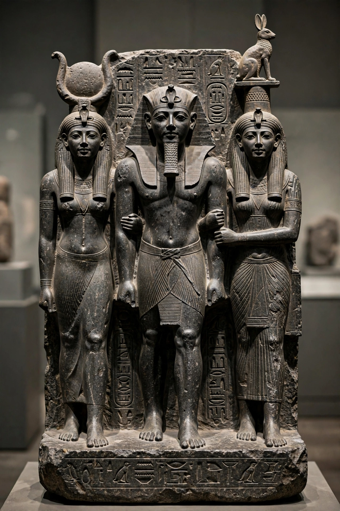

Menkaure

| Menkaure | |
| Reign | c. 2532–2503 BC (Fourth Dynasty) |
|---|---|
| Predecessor | Khafre |
| Successor | Shepseskaf |
| Burial | Pyramid of Menkaure, Giza |
| Monuments | Pyramid of Menkaure; triad statues |
Menkaure (also spelled Menkaura, in Greek Mykerinos or Mencherês) was an ancient Egyptian pharaoh of the Fourth Dynasty during the Old Kingdom, son of Khafre and grandson of Khufu. He built the Pyramid of Menkaure, the smallest of the three main pyramids of the Giza plateau.
- Reign
- Pyramid complex
- Statuary
- Reputation in later tradition
Reign
Menkaure's reign length is uncertain: the Turin King List is damaged at his entry and has been read as 18 or 28 years. Later classical tradition, reported by Herodotus, remembered him as a just and pious ruler who reopened the temples and lightened the burdens his predecessors had imposed building their pyramids — a contrast drawn sharply with Khufu and Khafre.
Pyramid complex
The Pyramid of Menkaure, originally about 65.5 m high with a base of some 103 m, is a little over a tenth the volume of the Great Pyramid. Its lower courses were cased in red granite from Aswan, much of which was left unfinished, suggesting the king died before completion; his successor Shepseskaf hurriedly finished the temples in mudbrick. Inside the pyramid's burial chamber a basalt sarcophagus was found; it was lost at sea in 1838 when the ship carrying it to England, the Beatrice, sank off Spain. A wooden coffin bearing Menkaure's name, found in the pyramid, proved to be a much later replacement, and mummified remains from the chamber have been dated to later periods.
Statuary
Menkaure's valley temple yielded some of the masterpieces of Old Kingdom sculpture: four (probably originally five) triads in greywacke showing the king between the goddess Hathor and a personified province (nome), and the celebrated dyad of Menkaure standing beside a queen, usually identified as Khamerernebty II, now in the Museum of Fine Arts, Boston. Excavated by George Reisner in the early twentieth century, the statues are renowned for their serene, naturalistic modelling.
Reputation in later tradition
Herodotus tells the story that Menkaure, warned by an oracle that he had only six years to live, turned night into day with lamps to double his allotted span. A New Kingdom and Late Period cult of the king persisted at Giza, and his name was still honoured centuries after his death.
See also: Khafre; Khufu; Egyptian pyramids; Grand Egyptian Museum.